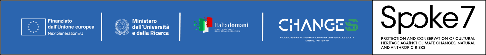

Aims and Scope
Earth Observation (EO) is a rapidly growing research field that brings together computer vision, machine learning, and signal/image processing to provide valuable information about processes occurring at the Earth's surface. EO utilizes data from airborne and spaceborne sensors to capture detailed information on materials and biophysical properties across a wide range of the electromagnetic spectrum, with varying spatial, temporal, and spectral resolutions.
This assumes particular importance in view of the environmental challenges our Planet is facing, including climate change, habitat destruction, pollution and loss of biodiversity. By combining advanced image processing techniques, machine learning algorithms, and big data analysis, computer vision can be used to automate the process of monitoring and analysing environmental data.
EO has a wide range of applications, including online mapping services, large-scale surveillance, urban modelling, navigation systems, natural hazard forecast and response, climate change monitoring, virtual habitat modelling, and more. The integration with other kinds of data necessitates the application of multiple pattern recognition tasks for analysis and offers immense potential for advancing our understanding of Earth's dynamics, thanks to an interdisciplinarity which allows to address complex societal and environmental challenges.
The primary goal of this workshop is to foster collaboration and idea exchange among the Computer Vision, Remote Sensing, Environmental Monitoring, and Climate Change communities, both nationally and internationally. We aim to bring together researchers and experts from the three fields to promote interdisciplinary research, encourage innovative computer vision approaches for automated interpretation of Earth observation and other correlated data, and enhance knowledge within the vision community for this rapidly evolving and highly impactful area of research. The implications of this research are far-reaching, affecting human society, economy, industry, and the environment.
Precisely, a non-exhaustive list of topics of interest includes the following:
- Methods: advancements in Data-centric machine learning; foundation models; remote Sensing, UAV or Vision data with language processing models (Multimodal Large Language Models, Vision Language Models, Prompt Engineering, RAG, etc); geospatial AI; open-set, open-world, and open long-tailed recognition; Multi-resolution, multi-temporal, multi-sensor, multi-view, multi-modal approaches; Generative models (GANs, stable diffusion, autoencoders); Graph Neural Networks; Spatio-temporal modeling; Self-, weakly-, semi-, and unsupervised approaches; Physics-Informed Neural Networks; human-in-the-loop and active learning; edge AI, explainable and trustworthy AI; uncertainty-aware learning; digital twins; climate informatics; green AI; causal learning, and so on.
- Tasks: innovative approaches to classification; object detection; segmentation (universal, semantic, panoptic, and/or instance); environmental anomaly detection; climate risk prediction; flood and wildfire detection; drought monitoring; glacier retreat analysis; biodiversity assessment; ecosystem monitoring; carbon emission estimation; crop health analysis; precision agriculture; water quality assessment; air pollution monitoring; urban heat island detection; data augmentation and synthetic data generation; deep fake and misinformation; domain adaptation and concept drift; super-resolution; explainability and interpretability; Multi and hyperspectral, optical, and radar image processing; environmental scene understanding; habitat mapping; geospatial reasoning; and so on.
- Applications: impactful solutions for disaster response and resilience; climate change mitigation and adaptation; sustainable urban planning and smart cities; sustainable intelligent precision agriculture; forest deforestation monitoring; Coast, sea, and marine monitoring; water conservation; renewal energy assessment; biodiversity conservation; carbon accounting; circular economy; sustainable development goals tracking; geoscience; ecological restoration; air quality monitoring; cryosphere monitoring; food security; climate justice; geoscience, phenological studies; environmental impact assessment; ecosystem services; sustainable transportation; natural resource management; ocean health monitoring; climate policy support; digital earth systems; sustainability analytics; and so on.
This workshop is supported by:
